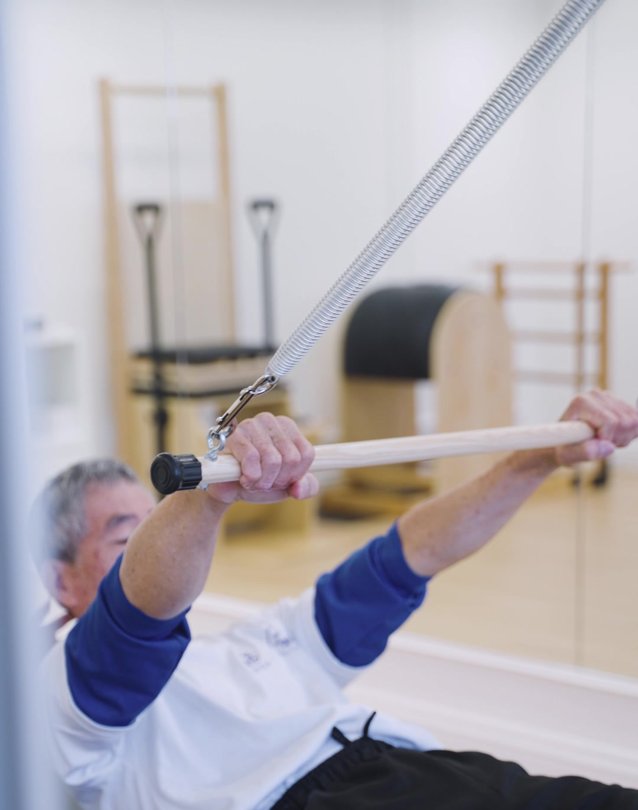
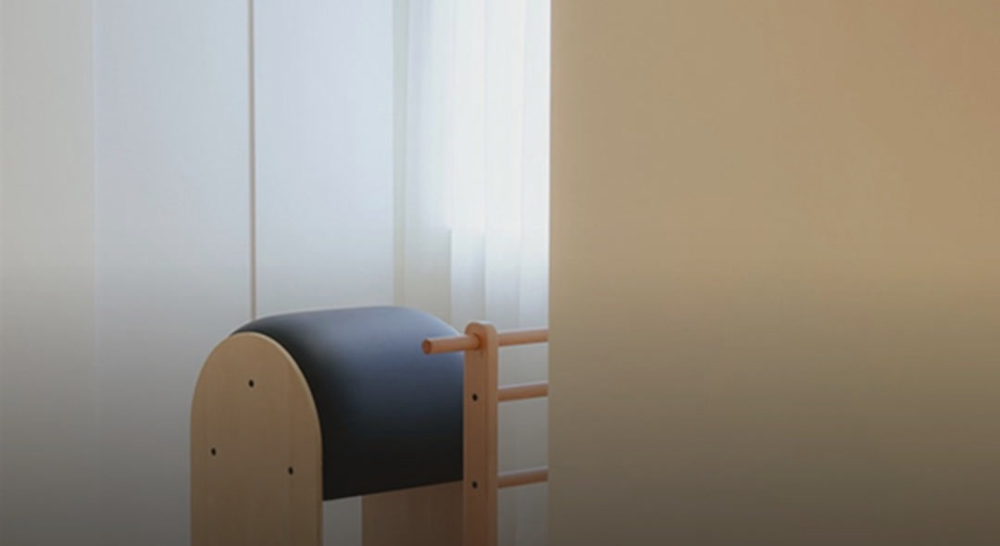
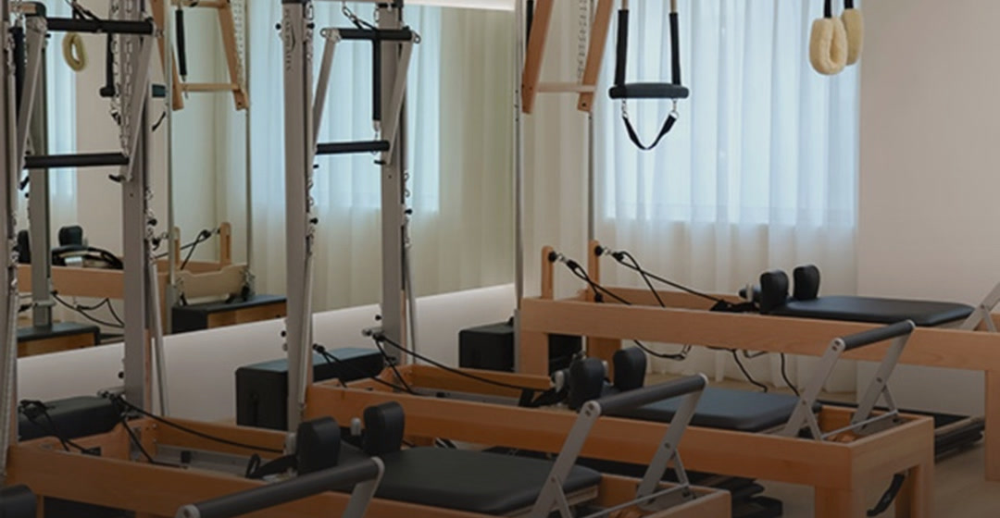

器械皮拉提斯
不追求聲量，而是讓力量、控制與呼吸，自然地被看見。
團體課・私人課
真實的器械、光線與留白，讓人還沒讀完文字，就先記住這是一個可以安心靠近的地方。

讓第一次想從自己開始的人，知道怎麼走，也知道自己會被好好接住。

在一整排器械之間，跟著同一個節奏，從穩定，走向完整控制。
動作影像
三段直式動作肖像，一次播放一段。預設靜音，可個別開啟聲音。
左右滑動，看三段影像
PILATIQUE